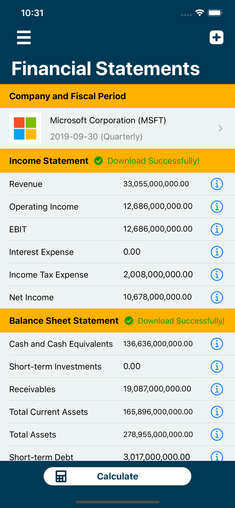
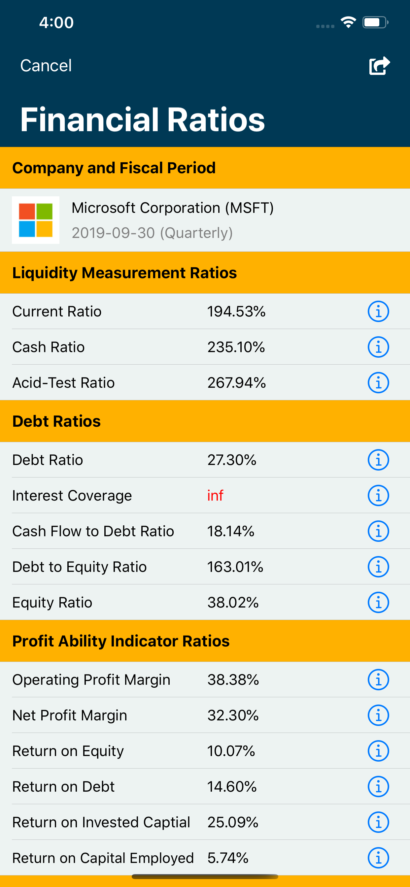
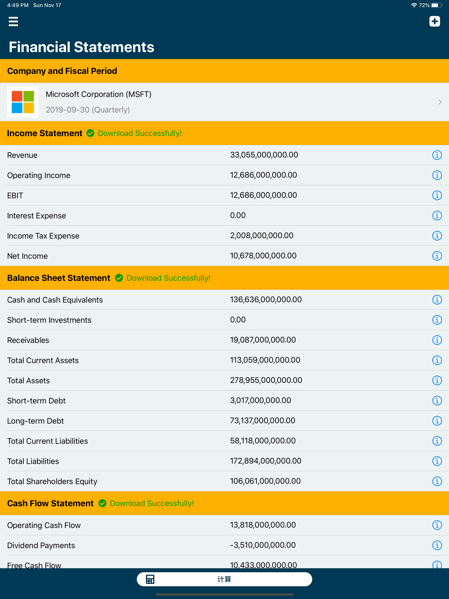
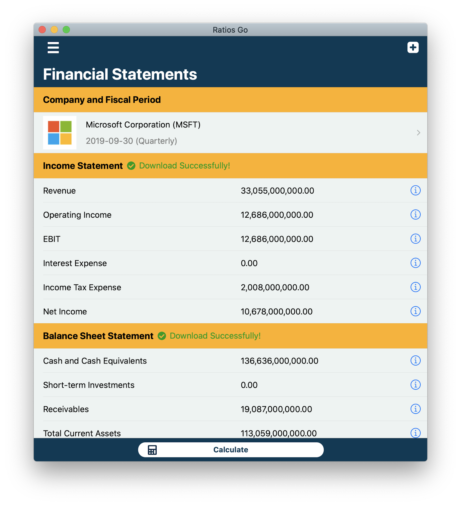

Financial Ratios Go
Financial Ratios Go is a user-friendly financial statement analysis App.
Financial Statements Go is a financial reports App that helps you get key information from 25000+ publicly-traded companies' statements.
It can also store user-defined financial statements and add fiscal period.
It also provides financial statement comparison which includes both year-over-year(YOY) and quarterly comparison.
The current available financial ratios are:
- Liquidity Measurement Ratios: Current Ratio, Cash Ratio, Acid-Test Ratio
- Debt Ratios: Debt Ratio, Interest Coverage, Cash Flow to Debt Ratio, Debt to Equity Ratio, Equity Ratio
- Profitability Indicator Ratios: Operating Profit Margin, Net Profit Margin, Return on Equity, Return on Debt, Return on Invested Captial, Return on Capital Employed
- Cash Flow Indicator Ratios: Cash Flow Return on Investment (CFROI), Dividend Payout Ratio, Free Cash Flow-To-Sales, Retention Ratio
We will constantly optimize and maintain our App and make sure users have the best experience. Also we appreciate https://financialmodelingprep.com for providing API service for us. Thank you for your support!
财务比率计算器是一款用于财务比率和报表分析的应用程序。
这款应用提供了超过25000个上市公司的财务报表信息。
用户还可以在该应用程序上保存和添加不同公司各时期的的财务报表，轻松创建自己的财务报表资料库！
本应用还提供财务报表比较分析功能，用户可以自由选择年度报表比较或者季度报表比较。
当前可用的财务比率有： 1. 计量流动性比率：流动比率，现金比率，速动比率 2. 计量负债和偿还能力的比率：负债比率，利息支付倍数，现金流动与债务比率，负债权益比率，产权比率 3. 盈利能力指标（比率）：营业利润率，净利润率，股本回报率， 债务回报率，资本回报率，已动用资本回报率 4. 现金流量指标（比率）：现金流投资回报，股利支付率，自由现金流-总收入比率，自留额比率
我们的团队会持续优化和维护此应用，希望给用户带来最好的体验。
再次感谢您的支持！
財務比率計算器是一款用於財務比率和報表分析的應用程序。
這款應用提供了超過25000個上市公司的財務報表信息。
用戶還可以在該應用程序上保存和添加不同公司各時期的的財務報表，輕鬆創建自己的財務報表資料庫！
本應用還提供財務報表比較分析功能，用戶可以自由選擇年度報表比較或者季度報表比較。
當前可用的財務比率有： 1. 計量流動性比率：流動比率，現金比率，速動比率 2. 計量負債和償還能力的比率：負債比率，利息支付倍數，現金流動與債務比率，負債權益比率，產權比率 3. 盈利能力指標（比率）：營業利潤率，淨利潤率，股本回報率， 債務回報率，資本回報率，已動用資本回報率 4. 現金流量指標（比率）：現金流投資回報，股利支付率，自由現金流-總收入比率，自留額比率
我們的團隊會持續優化和維護此應用，希望給用戶帶來最好的體驗。
再次感謝您的支持！
Android Version
Financial Ratios Go is also available on Google Play. Check it out!
Screenshot
iPhone
 
iPad

Mac
